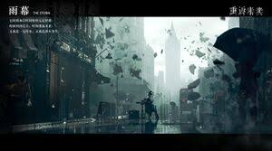
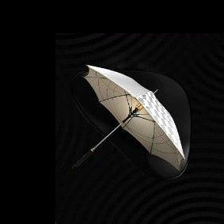
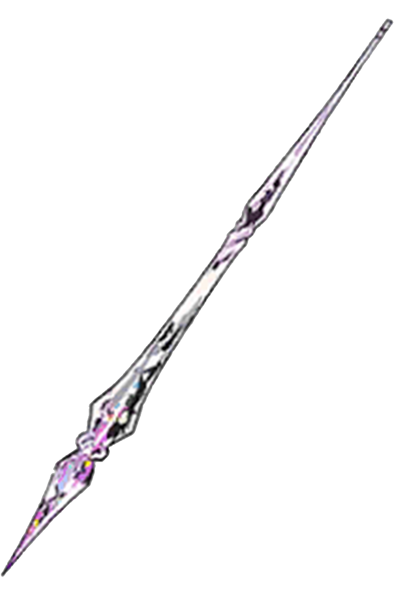

世界觀
暴雨：
1999年12月31日23点59分降下“暴雨”,雨自下而上回归天空,时间开始【回溯】
一种成因未知的灾害,人物、建筑、文化、世界、时间乃至宇宙都被回溯,时而回到过去,时而重返未来
被回溯的人判定为一种【时间线的消失】,他可能会以相同的外貌,但是另一个身份、性格回到你的身边
被回溯的人会出现在一条【新的时间线里】,但不会保留回溯前的记忆
已知免疫暴雨的方法有：
- 平衡伞(适用于【人类、神秘学家】
- 特殊建筑内(适用于【人类、神秘学家】
- 维尔汀(主角)的箱子适用于【神秘学家】
- 特殊的咒语术式及其搭载体适用于【人类、神秘学家】
神秘術：
- 它們有神奇的效用，功率因人而異，用處可大可小
- 施術方式各異，但大部分依靠於術杖施術，少部分天賦異稟者可獨立施術
- 有通用神秘術（例如軟碟等）與獨特神秘術之分
- 神秘術在一定程度上會傷害／反噬施術人，這與神秘術等表現形式等有所關聯

